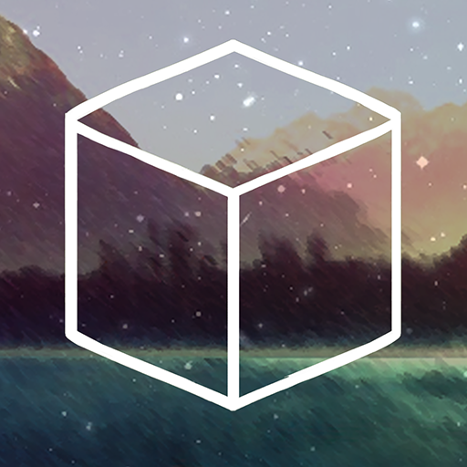

“Perhaps you can change your fate...”
Cube Escape: The Lake é o segundo episódio da série Cube Escape, lançado em 2015 pela Rusty Lake. O jogo leva o jogador até uma pequena cabana abandonada às margens de um lago misterioso, onde diversos objetos escondem pistas e enigmas. A aventura mantém o estilo point-and-click da franquia, combinando exploração, puzzles e uma atmosfera estranha e inquietante. Durante a investigação, o jogador descobre que aquele lago está conectado aos misteriosos acontecimentos de Rusty Lake.
A história começa quando o jogador chega a uma pequena cabana localizada às margens de Rusty Lake. Dentro dela, existem diversos objetos aparentemente comuns, mas cada um esconde uma pista que pode ajudar a revelar os segredos daquele lugar. O objetivo é explorar a cabana, encontrar itens e solucionar os enigmas enquanto algo estranho parece observar cada movimento. Conforme o jogador avança, a natureza misteriosa do lago começa a ficar evidente. A pesca revela elementos inesperados e a cabana se transforma em um cenário cada vez mais perturbador, introduzindo conceitos e acontecimentos que se tornam importantes para a mitologia de Rusty Lake